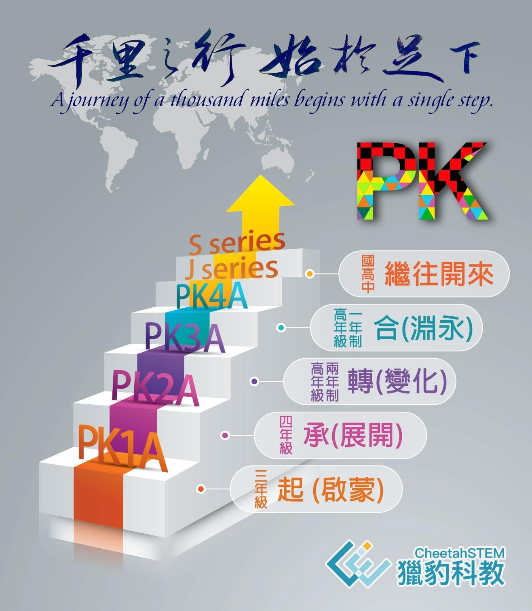

種一棵樹最好的時機是20年前，其次便是現在。
小學階段是孩子學習啟蒙的重要時刻：
培養態度、培養習慣、培養認知、培養品味、培養思維、培養方法。
獵豹認為小學一、二年級以前的孩子，應該少上課 、多花些時間在：遊戲、運動、國語文、閱讀、發問、邏輯推理。
當孩子具備一些閱讀、文意理解和基本推理能力及簡單的算術能力、有了一定的心智成熟度後，從小學二、三年級再開始接受系統性資優課程教育與訓練。
2022年，獵豹推出全新3~6年級PK課程：
以
三~六年級課綱內容為經，
啟發式、研究型教學為緯，
初級競賽為輔的加深加廣課程。
獵豹的過去與現在匯集了許多台灣最頂尖的孩子，他們背後都有關心、理解啟蒙教育重要的爸媽。
我們注意到，特別是那些極為傑出且持續突破、締造佳績的孩子，並非得利於早年超前學習了大量知識，而是他們都有著與眾不同的學習態度與方法，這些影響深遠的差異，源自於家庭與啟蒙教育。
獵豹PK課程，適合也歡迎具二~五年級程度，喜歡數學、熱愛思考、具有熱情的孩子！
加入獵豹最好的時間是以前，其次是現在。
PK1A:三年級資優數學課程(一年制)
PK2A:四年級資優數學課程(一年制)
PK3A:高年級資優數學課程(兩年制)
PK4A:高年級資優數學課程(一年制)
